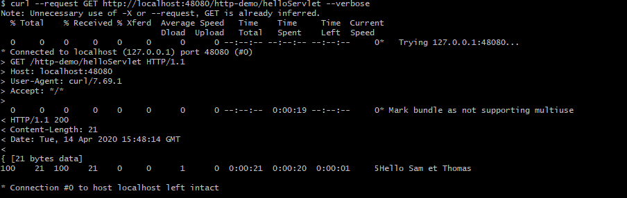

Http (hyper-text trasnfer protocol) est un protocole de transfert de données. Il s'agit d'un protocole capable de transférer toutes données assimilables à du texte (html, css, xml ...) mais aussi des images, du binaire etc.
Le transfert est réalisé entre un client et un serveur : le client émet la requête, le serveur fournit la réponse.
Voici un example de transfert de données http entre un client (outil curl) et le serveur tomcat d'eclipse:

La première partie de l'échange concerne la connexion au serveur. Celle-ci est gérée par le protocole TCP (transmission control protocol).
Ce protocole est chargé de s'assurer que le serveur adressé par la requête http existe et accepte la connexion.
Si c'est le cas, le client va envoyer le contenu de la requête http.
En paramètre de la méthode on donne le chemin de la méthode : où est ce que je souhaite obtenir, envoyer, déposer des données.
Dans notre cas, le client curl a écrit ces headers :
Une réponse est constituée par le serveur et contient également un HEADER et un BODY.
Dans notre cas, le serveur a écrit ces headers :
En résumé, Http est un protocole d'échange de données entre un serveur et un client : le client émet des requêtes et le serveur fournit des réponses.
Les requêtes et les réponses sont constituées d'HEADERs et de BODYs. Les HEADERS apportent des indications (méthode, code retour, format), les BODYS contiennent les données.
Les BODYS peuvent être absents s'il n'y a pas de données à transmettre.
les requêtes ont une méthode (GET, POST, DELETE, PUT) et un chemin. Le serveur traite la méthode au chemin donné et adresse la réponse avec un code retour 200.
S'il ne trouve pas le chemin, il renverra le code retour 404. Si la méthode est refusée, il renverra 405. Il y a quantité d'autres codes erreur.
Serveur et client sont des rôles : un serveur peut-être client d'un autre serveur.
Voici trois cas de figures d'utilisation des requêtes http depuis une page web: